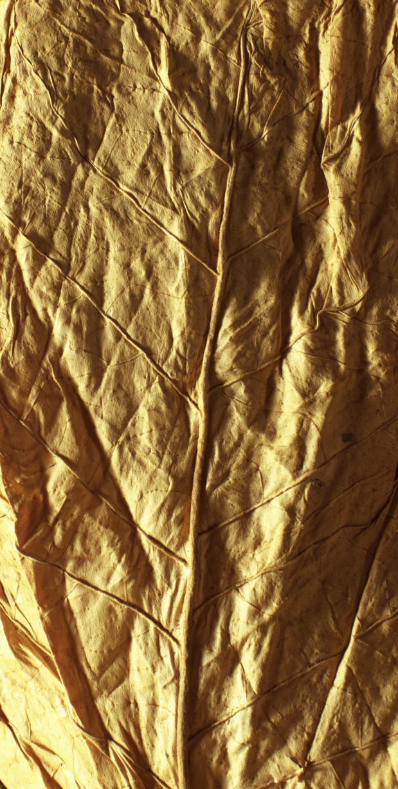

Коснись табачного листа
и запусти процесс
выдержки.
Удерживай, пока табачный
лист не достигнет
18 месяцев выдержки.

*Крафтовая коллекция.
**За первичную регистрацию в базе данных
курильщиков.
СПАСИБО ЗА
РЕГИСТРАЦИЮ!
СПАСИБО!
ТВОЙ НОМЕР
ТЕЛЕФОНА УЖЕ БЫЛ
ЗАРЕГИСТРИРОВАН
РАНЕЕ.
Знаешь, сколько времени
требуется для создания
уникального вкуса
Marlboro Crafted?
ПОЧТИ У ЦЕЛИ!
Табачный лист
выдержан на 75%
ПОЗДРАВЛЯЕМ!
Правила программы «Marlboro Crafted (Мальборо Крафтовая коллекция)»
Правила обработки персональных данных
Соглашение о предоставлении информации, получении и обработке персональных данных
1. Настоящее соглашение регулирует отношения, возникающие между совершеннолетним потребителем табачных и
табакосодержащих изделий (далее – Совершеннолетний потребитель) и Обществом с ограниченной ответственностью «Филип
Моррис Сэйлз энд Маркетинг» (Российская Федерация, 127051, г. Москва, Цветной бульвар, д. 2) (далее – ООО «ФМСМ»),
и связанные с обработкой персональных данных Совершеннолетнего потребителя и предоставлением ему информации о
табачных и табакосодержащих изделиях товарных знаков (марок) аффилированных компаний «Филип Моррис Интернэшнл», об
их изготовителях (импортерах, продавцах) и иной информации, предусмотренной настоящим соглашением и
соответствующей интересам Совершеннолетнего потребителя.
2. Совершеннолетний потребитель подтверждает, что является гражданином Российской Федерации (или проживает на
территории Российской Федерации) старше 18 лет и употребляет табачные или табакосодержащие изделия.
3. В соответствии с Федеральным законом N 152-ФЗ «О персональных данных» от 27.07.2006 г., Федеральным законом N
149-ФЗ «Об информации, информационных технологиях и о защите информации» от 27.07.2006 г., а также Федеральным
законом N 2300-1 «О защите прав потребителей» от 07.02.1992 г. Совершеннолетний потребитель настоящим дает ООО
«ФМСМ» (Российская Федерация, 127051, г. Москва, Цветной бульвар, д. 2), его филиалам, аффилированным лицам и/или
уполномоченным ими лицам, действующим в соответствии с соглашениями о конфиденциальности, свое согласие:
3.1. осуществлять автоматизированную и неавтоматизированную обработку, включая сбор, запись, систематизацию,
накопление, хранение, уточнение (обновление, изменение), использование, передачу и трансграничную передачу (в том
числе распространение, предоставление, доступ) третьим лицам, включая, но не ограничиваясь, ООО «Сонопресс»
(150049, г. Ярославль, ул. Свободы, д. 97), обезличивание, блокирование, удаление, уничтожение предоставленных
Совершеннолетним потребителем своих персональных данных, а также персональных данных Совершеннолетнего
потребителя, находящихся в общедоступных источниках информации, в том числе в сети Интернет (далее – Персональные
данные);
3.2. предоставлять Совершеннолетнему потребителю информацию в отношении любых событий, мероприятий и услуг,
табачных и табакосодержащих изделий, пунктов продаж и различных вопросов, связанных с табачными и
табакосодержащими изделиями, а также приглашений на сайты и/или в мобильные приложения ООО «ФМСМ» и/или его
аффилированных лиц и/или на сайты / в мобильные приложения уполномоченных ими третьих лиц и иную информацию
посредством направления сообщений на почтовый адрес, адрес электронной почты, номер телефона (включая SMS, MMS и
иные виды сообщений на телефонные номера, почту и электронную почту), предоставленные Совершеннолетним
потребителем или находящиеся в общедоступных источниках в сети Интернет, и/или через мобильные приложения. При
определении содержания информации, предоставляемой Совершеннолетнему потребителю согласно настоящему п. 3.2, ООО
«ФМСМ» и уполномоченные им третьи лица учитывают Персональные данные.
4. Согласие на действия, предусмотренные п. 3.1 настоящего соглашения, предоставляется Совершеннолетним
потребителем для целей или в связи с:
4.1 проведением маркетинговых и социологических исследований и анализа, разработки любых программ, включая
программы создания и формирования баз данных, составления статистической отчетности, соблюдения требований
законодательства Российской Федерации;
4.3 предоставлением Совершеннолетнему потребителю информации согласно п. 3.2 настоящего соглашения;
4.4 приглашением Совершеннолетнего потребителя на сайты и/или в мобильные приложения ООО «ФМСМ» и/или его
аффилированных лиц и/или на сайты / в мобильные приложения уполномоченных ими третьих лиц;
4.5 проверкой и подтверждением (верификацией) возраста Совершеннолетнего потребителя.
5. Перечень Персональных данных предусмотрен в анкете, заполняемой Совершеннолетним потребителем в бумажном или в
электронном виде при заключении настоящего соглашения. Персональные данные, не предусмотренные в анкете, также
могут находиться в общедоступных источниках информации, в том числе в сети Интернет.
6. Согласие Совершеннолетнего потребителя, предусмотренное в п. 3 настоящего соглашения, действует до даты его
отзыва путем направления Совершеннолетним потребителем письменного уведомления в адрес ООО «ФМСМ» по почте
(127051, Россия, г. Москва, Цветной бульвар, д. 2) или по электронной почте (unregister@pm1to1.ru).
Совершеннолетний потребитель соглашается, что удаление Персональных данных и исключение его из базы получателей
информации может занять до 30 календарных дней с даты получения ООО «ФМСМ» уведомления Совершеннолетнего
потребителя об отзыве предоставленного им согласия.
7. Совершеннолетний потребитель подтверждает, что предоставленные им Персональные данные соответствуют
действительности и являются актуальными. Совершеннолетний потребитель обязуется незамедлительно информировать ООО
«ФМСМ», если Персональные данные утрачивают актуальность или изменяются, включая изменение статуса потребителя
табака.
8. ООО «ФМСМ» обязуется соблюдать конфиденциальность Персональных данных и обеспечивать безопасность Персональных
данных, в частности принимать необходимые правовые, организационные и технические меры для защиты Персональных
данных от неправомерного или случайного доступа к ним, уничтожения, изменения, блокирования, копирования,
предоставления, распространения Персональных данных, а также от иных неправомерных действий в отношении
Персональных данных.
9. ООО «ФМСМ» также обязуется обеспечивать соблюдение конфиденциальности и безопасности Персональных данных со
стороны его филиалов, аффилированных лиц и уполномоченных им лиц при их привлечении к обработке Персональных
данных.
10. Обязанности ООО «ФМСМ», предусмотренные в п. 8 и п. 9 настоящего соглашения, не распространяются на
Персональные данные, находящиеся в общедоступных источниках информации, в том числе в сети Интернет.
ПРАВИЛА программы «Marlboro Crafted (Мальборо Крафтовая коллекция)» (далее по
тексту – Правила)
1.1. Общие положения. Программа «Marlboro Crafted (Мальборо Крафтовая коллекция)» - программа по регистрации
совершеннолетних потребителей табачных и табакосодержащих изделий, являющихся гражданами Российской Федерации или
проживающих на территории Российской Федерации (далее по тексту настоящих Правил – Потребителей Табачных изделий
или Участник), на Интернет-сайтах https://redlpe.marlboro.ru/ и https://goldlpe.marlboro.ru/ (далее – Сайт) в базе
данных совершеннолетних Потребителей Табачных изделий Организатора.
1.2. Организатором Программы является общество с ограниченной ответственностью «Филип Моррис Сэйлз энд Маркетинг»
(ранее и далее по тексту - Организатор) 127051, Российская Федерация, Москва, Цветной бульвар, д. 2.
1.3. Срок и территория проведения:
1.3.1. Общий срок проведения Программы: с 00:00:00 «15» ноября 2020 г. по 23:59:59 по «15» декабря 2020 г.
1.3.2. Регистрация Участников в Программе и подтверждение Участниками согласия с настоящими Правилами – с 00:00:00
«15» ноября 2020 г. по 23:59:59 по «15» декабря 2020 г.
1.3.3. Программа проводится на территории Российской Федерации.
2. Участники, их права и обязанности
2.1. Участниками Программы могут быть только дееспособные лица, достигшие возраста 18 лет, граждане Российской
Федерации (или проживающие на территории Российской Федерации), являющиеся потребителями табачных изделий.
2.2. Участниками не могут быть работники и представители Организатора, аффилированных с Организатором лиц, члены
их семей, а также физические лица, заключившие трудовой или иной договор с другими юридическими лицами и/или
индивидуальными предпринимателями, причастными к организации и проведению Программы, и члены их семей. Факт
участия в Программе означает полное согласие Участника с настоящими Правилами.
2.3. Участником Программы может быть Потребитель Табачных изделий, который на дату начала Программы не прошел
успешно проверку возраста и полную регистрацию в базе данных совершеннолетних Потребителей Табачных изделий
Организатора. В случае, если Потребитель Табачных изделий уже зарегистрирован в базе данных Организатора и им
успешно пройдена проверка возраста, то при регистрации на Сайте в рамках Программы ему будет показано техническое
сообщение о том, что он уже числится в указанной базе данных, что означает, что такой Потребитель Табачных изделий
не может претендовать на получение и получать призы по итогам участия в Программе.
2.4. Для получения призов по итогам участия в Программе Участник обязуется выполнять условия настоящих Правил.
2.5. Участники имеют права и несут обязанности, установленные действующим законодательством Российской Федерации,
а также настоящими Правилами.
2.6. В течение периода Программы, указанного в п.1.3.2 настоящих Правил, Участник имеет право обратиться с
вопросами по условиям Программы, указанных в настоящих Правилах, позвонив на горячую линию по телефону 8-
800-100-17-70.
3. Условия участия в Программе
3.1. Для того, чтобы принять участие в Программе, лицу, соответствующему требованиям, установленным в п.2,
необходимо совершить последовательность действий:
3.1.1. В период, установленный в п. 1.3 настоящих Правил, просканировать QR код, размещенный на пачках сигарет
MARLBORO CRAFTED GOLD и MARLBORO CRAFTED BLUE (Мальборо Крафтовая коллекция коллекция);
3.1.2. Пройти процедуру подтверждения возраста следуя инструкции при регистрации на Сайте:
- использования технологии определения возраста с помощью технологии распознавания лица, которая подтверждает, что
Участнику больше 18 лет;
3.1.3. Зарегистрироваться на Сайте, предоставив о себе следующие данные: фамилию и имя, пол, адрес электронной
почты для связи с Участником, номер мобильного телефона для связи с Участником, путем проставления отметки в форме
регистрации подтвердить, что Участник является потребителем табачной продукции, а также указать дату рождения.
3.1.4. Согласиться с настоящими Правилами и с условиями пользования Сайтом.
3.2. Участники имеют право:
3.2.1. Внимательно ознакомиться с настоящими Правилами и подтвердить свое согласие на участие в Программе на
условиях настоящих Правил путем проставления специальной отметки на Сайте.
3.2.2. Принимать участие в Программе в порядке, определенном настоящими Правилами.
3.2.3. Воздержаться от участия в Программе. Каждый Участник имеет право один раз принять участие в Программе и
получить не более одного приза. Организатор будет проверять и аннулировать повторные регистрации согласно п. 7.4
Правил.
3.3. Обязанности Участника:
3.3.1. При участии в Программе следовать всем условиям и требованиям настоящих Правил.
3.3.1.1. Механика программы ««Marlboro Crafted (Мальборо Крафтовая коллекция)»:
3.3.1.2. Пользователю необходимо пройти процедуру подтверждения возраста, указанную в пункте 3.1.2, чтобы получить
доступ к программе. Если пользователь является зарегистрированным и уже проходил процедуру подтверждения возраста
в программе «Marlboro Crafted (Мальборо Крафтовая коллекция)», то ему нужно пройти проверку возраста и авторизацию
еще раз.
3.3.1.3. Совершеннолетний курильщик (далее Пользователь), переходит далее и совершает следующие действия:
• Пользователю показывается приветственный экран и информирование о вознаграждении за регистрацию в размере 100
рублей на телефон. На экране находится кнопка «Сделать фото», перейдя по которой пользователь должен пройти
проверку возраста, указанную в пункте 3.1.2 и получить доступ к форме регистрации
• После успешного прохождения подтверждения возраста, у пользователя открывается форма регистрации;
• После регистрации, пользователю доступна для прохождения игра «Открой секрет выдержки табака»;
• После прохождения игры, пользователь видит баннер с продуктовой информацией и может перейти на сайт, либо пройти
игру еще раз.
3.3.1.4. Если Пользователь является незарегистрированным, то он попадает на страницу с формой регистрации и
проходит процедуру регистрации, указанную в пункте 3.1.3.
3.3.1.5. Подтверждение регистрации происходит посредствам отправки пользователю смс-кода.
3.3.1.6. После регистрации пользователь сможет продолжить взаимодействие.
3.3.1.7. Каждый новый зарегистрированный пользователь получает приз за регистрацию в размере 100 рублей на счет
мобильного телефона.
3.3.2. Выполняя условия Программы для получения приза, Участник подтверждает свое согласие на получение приза.
4. Права и Обязанности Организатора Программы
4.1. Организатор обязан выдать призы Участникам в соответствии с положениями настоящих Правил.
4.2. Организатор имеет право разглашать персональные данные Участника Программы в случаях, установленных
применимым законодательством.
4.3. Организатор оставляет за собой право не вступать в письменные переговоры либо иные контакты с Участниками –
кроме случаев, указанных в настоящих Правилах или соответствующих требованиям действующего законодательства
Российской Федерации.
4.4. При досрочном прекращении проведения Программы Организатор обязан опубликовать на Сайте сообщение о таком
прекращении.
4.5. Приостановление или досрочное прекращение проведения Программы не освобождает Организатора от необходимости
выдачи (передачи) призов Участникам, определенным в соответствии с настоящими Правилами на момент приостановления
или досрочного прекращения Программы, а также совершения других необходимых в связи с этим действий, при условии
выполнения Участником требований настоящих Правил о предоставлении всех необходимых для выдачи призов документов
и/или информации.
4.6. Организатор и уполномоченные им лица не несут ответственности за неисполнение (несвоевременное исполнение)
Участниками обязанностей, предусмотренных настоящими Правилами.
4.7. Организатор вправе отказать в выдаче приза Победителю, не выполнившему условия Правил в установленные сроки.
4.8. Организатор имеет право отстранить Участника от участия в Программе и отказать ему в выдаче приза на любом
этапе проведения Программы, если возникли подозрения, что Участник пытается неправомерно повлиять на проведение
и/или результаты Программы посредством любых технических, программных или других средств.
4.9. Организатор не несет ответственности за неполучение от Участника необходимых сведений, в том числе по вине,
организаций связи, за технические проблемы и/или каналов связи, используемых при проведении Программы, а также за
невозможность осуществления связи с Участником из-за указанных неверных или неактуальных контактных данных, в том
числе в случае отправки призов по неправильному адресу или не надлежащему адресату, вследствие ошибки в написании
адреса при регистрации.
4.10. Организатор не несет ответственности за неисполнение либо ненадлежащее исполнение своих обязательств перед
Участниками вследствие сбоев в телекоммуникационных и энергетических сетях, действий вредоносных программ,
недобросовестных действий Участников или любых третьих лиц и/или иных обстоятельств вне контроля Организатора.
4.11. Организатор осуществляет проверку данных, полученных из предоставленных Участником Документов,
удостоверяющих личность, данным, указанным Участником в форме регистрации, в течение 3 (трех) рабочих дней с даты
получения соответствующей копии.
4.12. Организатор не несет ответственности за призы, задержанные или утерянные по вине третьих лиц.
4.13. Ответственность по уплате налогов, возникающая в предусмотренных законодательством Российской Федерации
случаях в связи с получением призов, лежит на Участниках, которые были признаны получателями призов и получили
призы.
4.14. Во всем, что не предусмотрено настоящими Правилами, Организатор и Участники руководствуются действующим
законодательством Российской Федерации.
4.15. Организатор имеет право отказать Участнику в предоставлении приза, если Участник предоставил о себе неверную
информацию или каким-либо другим образом нарушил настоящие Правила.
5. Гарантированные призы
5.1. Участники, в предусмотренные Правилами в сроки выполнившие требования пп. 2, 3 получат Гарантированный приз –
100 рублей на счет мобильного телефона. Одно лицо может получить приз, указанный в настоящем пункте, не более
одного раза.
5.2. Участник, соглашаясь с Правилами платформы, подтверждает, что ознакомился с Условиями осуществления переводов
денежных средств без открытия счета с использованием сервиса «Яндекс.Касса»
6. Способ и порядок информирования Участников об изменениях сроков и условий Программы:
6.1. Правила в полном объеме для открытого доступа размещаются в сети Интернет на Сайте.
6.2. В случае изменения Правил или прекращения работы Сайта, информация об этом будет размещена Организатором в
сети Интернет на Сайте.
7. Иные условия
7.1. Гарантированные призы не выдаются при несоблюдении Участником всех условий Программы, предусмотренных
настоящими Правилами.
7.2. Если по какой-либо причине Сайт не может функционировать так, как это запланировано, включая причины,
вызванные заражением компьютерными вирусами, неполадками в сети Интернет, дефектами, манипуляциями,
несанкционированным вмешательством, фальсификацией, техническими неполадками или любой иной причиной вне контроля
Организатора, которая искажает или затрагивает исполнение, безопасность, целостность или надлежащую работу Сайта,
Организатор может по своему единоличному усмотрению прекратить работу Сайта.
7.3. Регистрация на Сайте в соответствии с условиями его использования подразумевает, что Участник дает согласие
на осуществление Организатором и уполномоченными им лицами, действующими в соответствии с соглашениями о
конфиденциальности, автоматизированной и неавтоматизированной обработки, включая сбор, систематизацию, накопление,
хранение, уточнение (обновление, изменение), использование, распространение (в том числе передачу, включая
трансграничную передачу), обезличивание, блокирование, уничтожение предоставленных Участником или находящиеся в
общедоступных источниках в сети Интернет, персональных данных, для целей осуществления любым из вышеуказанных лиц
и (или) их уполномоченными представителями любых контактов с Участником в отношении любых событий, мероприятий и
услуг, табачных и табакосодержащих изделий, пунктов продаж и различных вопросов, связанных с табачными и
табакосодержащими изделиями, а также приглашений на сайты и/или в мобильные приложения ООО «ФМСМ» и/или его
аффилированных лиц и/или на сайты / в мобильные приложения уполномоченных ими третьих лиц и иную информацию
посредством направления сообщений на почтовый адрес, адрес электронной почты, номер телефона (включая SMS, MMS и
иные виды сообщений на телефонные номера, почту и электронную почту), предоставленные Участником или находящиеся в
общедоступных источниках в сети Интернет, и/или через мобильные приложения, а также для целей проведения
маркетинговых и социологических исследований и анализа, разработки любых программ, включая программы создания и
формирования баз данных, составления статистической отчетности, соблюдения требований законодательства Российской
Федерации, проверки и подтверждения (верификации) возраста совершеннолетнего Потребителя табачных изделий.
7.4. Организатор имеет право исключить из участия в Программе и блокировать тех лиц, которые создают
мульти-аккаунты (например, двойные или фиктивные регистрации Участников), используют специально созданные или
модифицированные программы либо оборудование для получения необоснованного преимущества над другими Участниками
или иным образом нарушают условия пользования Сайтом и/или настоящие Правила. Организатор будет дополнительно
проверять лица и аккаунты, в отношении которых у Организатора появятся сомнения в добросовестном соблюдении
вышеуказанных Правил и условий пользования Сайтом. В период такой проверки Организатор будет блокировать аккаунт,
вызывающий сомнения, и лицо, зарегистрировавшее этот аккаунт, будет лишено права участия в проводимой Программе и
возможности получения призов. Такому лицу будет заблокирован доступ ко всем сайтам Организатора. Условия
использования Настоящий веб-сайт www.premium.one предназначен только для потребителей табачных изделий 18 лет и
старше, являющихся гражданами России и постоянно проживающих в России. Для пользования Сайтом вам необходимо
ознакомиться и согласиться с настоящими Условиями пользования и Положением о конфиденциальности. Если вы не
согласны с Условиями пользования и Положением о конфиденциальности, вы не можете использовать Сайт. Все материалы
Сайта принадлежат обществу с ограниченной ответственностью «Филип Моррис Сэйлз энд Маркетинг» (Россия) (далее ООО
«ФМСМ»). При использовании на Сайте и в настоящих Условиях пользования и Положении о конфиденциальности термин
«мы» в любых падежах означает ООО «ФМСМ». Для настоящих Условий пользования и Положения о конфиденциальности
Допущенные третьи лица означают: (а) наших аффилированных лиц и (б) наших лицензиаров, агентов, подрядчиков,
внешних консультантов и поставщиков услуг, а также внешних поставщиков информации, с которыми заключены договоры
(контракты) на оказание услуг или осуществление иных действий для нас или от нашего имени и/или для наших
аффилированных лиц либо от их имени, и которые в соответствии с условиями таких договоров (контрактов) не имеют
права использовать или раскрывать информацию, за исключением случаев использования или раскрытия информации для
целей оказания услуг или осуществления иных действий для нас или от нашего имени и/или для наших аффилированных
лиц либо от их имени. Доступ к Сайту Доступ к Сайту предоставляется только тем лицам, которые отвечают следующим
четырем условиям: (а) достигли 18 лет, (б) являются потребителями табачных изделий, (в) являются гражданами России
и (г) постоянно проживают на территории России. Воспользоваться Сайтом вы можете с помощью логина, который
является персональным и не подлежит передаче другим лицам, и пароля. Логин предоставляется лицам, удовлетворяющим
всем описанным четырем условиям, которые либо успешно прошли регистрацию на данном Сайте, либо уже были включены в
нашу базу данных совершеннолетних потребителей табачных изделий ранее. Мы сохраняем за собой право контролировать
доступ на Сайт и проверять использование вами настоящего Сайта.
Проверка статуса посетителей Сайта.
Для того чтобы мы могли предоставить вам доступ на Сайт, просим Вас пройти процедуру подтверждения возраста. Вы
можете это сделать одним из следующих способов: (i) с помощью технологии распознавания лица. Получение от нас
информации Пройдя регистрацию на Сайте, вы будете включены в базу данных потребителей табачных изделий. Это
означает, что вы будете получать информацию и материалы, относящиеся к табачным изделиям, и различным вопросам,
связанным с табачными изделиями, а также приглашения на наши иные сайты. Соглашаясь с Условиями пользования
Сайтом, вы даете нам право направлять вам такую информацию посредством электронной связи или иным способом
(включая электронную почту, почту, SMS, MMS). Вы в любой момент можете обратиться с требованием прекратить
направлять вам такую информацию, (а) позвонив на горячую линию по телефону 88001001770или (б) заполнив форму на
странице «Отказ от рассылки» на Сайте. Вы также в любой момент можете обратиться с требованием исключить вас из
базы данных совершеннолетних потребителей табачных изделий, (а) позвонив на горячую линию по телефону 88001001770,
или (б) заполнив форму на странице «Закрыть доступ» на Сайте. Исключение из базы данных совершеннолетних
потребителей табачных изделий означает, что вы не будете получать от нас указанную информацию. Обращаем Ваше
внимание на то, что исключение Вас из базы данных может занять до пяти недель, после чего Вы перестанете получать
от нас какую-либо информацию. Использование материалов, размещенных на данном Сайте Настоящий Сайт и все его
содержание (включая, но не ограничиваясь: программное обеспечение, файлы, графические объекты, сообщения,
размещаемые в разделе «Форум», и иную информацию) является собственностью ООО «ФМСМ», его аффилированных лиц и
(или) лицензиаров и защищается законодательством об авторском праве, товарных знаках и иными законами России и
других стран. Если прямо не предусмотрено иное, Сайт предназначен исключительно для ваших личных нужд.
Использование материалов настоящего Сайта в иных целях (включая, но не ограничиваясь: (а) использование Сайта в
связи с предпринимательской деятельностью; (б) внесение изменений, распространение, передачу, создание,
трансляцию, воспроизведение, публикацию, выдачу лицензий или обратное проектирование любых материалов, информации,
программного обеспечения, продуктов или услуг, полученных с данного Сайта; (в) создание, передачу или продажу
производных продуктов от любых материалов, информации, программного обеспечения, продуктов или услуг, полученных с
данного Сайта) без нашего предварительного письменного разрешения строго запрещается. Мы оставляем за собой право
на изменения правил в одностороннем порядке и без предварительного уведомления. Информация, которую вы
предоставляете Вы подтверждаете, что вы несете полную ответственность за предоставление любой информации на данном
Сайте, включая точность, соответствие закону, достоверность и адекватность такой информации. Не разрешается
предоставлять информацию нецензурного, дискредитирующего, порочащего или оскорбительного характера. Вы также
подтверждаете и соглашаетесь, что когда вы посещаете наш Сайт, и предоставляете ваши персональные данные на
настоящий Сайт, вы даете согласие на сбор, использование, хранение, обработку, анализ, распространение и/или
раскрытие, в том числе путем трансграничной передачи, таких персональных данных нами и/или любым из Допущенных
третьих лиц для целей в соответствии с законодательством России и иным применимым законодательством. Вы также
согласны с тем, что Ваш профиль с ограниченным набором данных (фамилия, имя, пол, возраст и город) будет доступен
для просмотра другим пользователям сайта. ООО «ФМСМ», его аффилированные лица и (или) лицензиары являются
владельцами всех прав собственности на Сайт, на содержание Сайта и на все услуги, предоставляемые Сайтом. Отказ от
гарантий Вы используете настоящий Сайт под свою собственную ответственность. Данный Сайт предоставляется на
условиях «как есть» и «как доступно». ООО «ФМСМ» и/или Допущенные третьи лица определенно и в явной форме
отказываются от любого вида гарантий, как ясно выраженных, так и подразумеваемых, включая, но не ограничиваясь:
подразумеваемые гарантии качества и пригодности для той или иной конкретной цели и любые гарантии, что материалы
настоящего Сайта не нарушают каких-либо прав; доступ к настоящему Сайту будет непрерывным и не будет подвержен
ошибкам; что данный Сайт будет безопасен; что данный Сайт или серверы, которые поддерживают Сайт, не будут
содержать вирусов; что информация на настоящем Сайте будет полной, точной или своевременной. Если вы загружаете
любые материалы с данного Сайта, вы делаете это исключительно по вашему личному усмотрению и под вашу собственную
ответственность. Ответственность за любой ущерб вашей компьютерной системе или потерю данных, которые возникают в
результате загрузки таких материалов, лежит исключительно на вас. В дополнение к вышесказанному, вы принимаете на
себя стоимость всех расходов, необходимых для обслуживания, восстановления или исправления такого ущерба.
Ограничение ответственности В наиболее полном объеме, не запрещенном применимым законодательством, вы понимаете и
соглашаетесь, что ни ООО «ФМСМ», ни одно из Допущенных третьих лиц не несет ответственность за любые убытки,
имеющие отношение или возникающие в результате вашего использования или невозможности использовать настоящий Сайт
или в результате любых других действий, которые мы или любое из Допущенных третьих лиц предприняли или не смогли
предпринять в связи или в результате вашего общения с нами или любым из Допущенных третьих лиц в связи с настоящим
Сайтом. Данные положения распространяются на ошибки, упущения, прерывания, неисправности, задержки, компьютерные
вирусы, потерю вами прибыли или информации, несанкционированный доступ или нарушение ваших пересылок или вашей
информации и иной материальный или нематериальный ущерб. Данное ограничение ответственности применяется вне
зависимости от того, взыскиваются ли убытки на основании условий договора, в результате небрежности или по любым
иным основаниям, возникающим в связи с использованием, невозможностью использовать или предоставлением информации,
услуг, продукции или материалов, доступных на настоящем Сайте, и даже в том случае, если мы или любое Допущенное
третье лицо проявили небрежность или были предупреждены о возможности возникновения таких убытков. Мы вправе в
любое время без предварительного предупреждения расширить, видоизменить, приостановить или полностью закрыть Сайт
или любую его часть и не несем никакой ответственности за это. Данный Сайт может содержать упоминание либо ссылки
на другие Сайты. Мы не несем никакой ответственности, связанной с использованием вами таких Сайтов. Упоминания
либо ссылки на другие Сайты на нашем Сайте предоставляются только в информационных целях, и ни при каких
обстоятельствах это не означает, что мы поддерживаем лиц, которым такие Сайты принадлежат, либо гарантируем
качество товаров или услуг, информация о которых содержится на таких Сайтах, а также отвечаем за аккуратность и
достоверность информации, размещенной на таких Сайтах. Возмещение убытков Вы соглашаетесь возместить ООО «ФМСМ» и
любому Допущенному третьему лицу, а также их соответствующим должностным лицам, директорам, работникам, агентам,
лицензиарам и поставщикам, оградить указанных лиц и обеспечить их непривлечение к ответственности в связи со всеми
и любыми убытками, ответственностью, расходами, ущербом и затратами, включая разумные вознаграждения юристов и
судебные расходы, возникающие в связи или в результате нарушения указанных Условий пользования (включая, но не
ограничиваясь, неосторожные или умышленные действия) вами или любыми иными лицами, осуществляющими доступ на Сайт
с использованием вашего интернет-соединения. В случае если вашими действиями вызваны технические неполадки Сайта
или систем передачи данных между Сайтом и вами или иными лицами, вы соглашаетесь нести ответственность за любые
убытки, включая разумные вознаграждения юристов и судебные расходы, возникающие в связи или в результате таких
неполадок. Блокирование доступа к Сайту Ваш доступ на Сайт может быть заблокирован в следующих случаях:
(а) вы перестали удовлетворять какому-либо из условий, соблюдение которых необходимо для доступа к Сайту;
(б) предоставление неверных персональных данных;
(в) нарушение Условий пользования, в частности, если вы размещаете на Сайте информацию нецензурного,
дискредитирующего, порочащего или оскорбительного характера;
(г) вы обратились к нам с требованием закрыть ваш доступ на Сайт;
(д) вы по каким-либо причинам исключены из нашей базы данных совершеннолетних потребителей табачных изделий;
(е) если у вас более одного логина.
Юрисдикция ООО «ФМСМ» создано в России. Настоящие Условия пользования и Положение о конфиденциальности, а также
использование вами Сайта регулируются законодательством России, и вы безотзывно соглашаетесь с исключительной
юрисдикцией судов, расположенных в России, в отношении любых действий, направленных на принудительное исполнение
настоящих Условий пользования и Положения о конфиденциальности. Мы понимаем, что у вас существует возможность
получить доступ к настоящему Сайту из любой иной юрисдикции в мире, но ни мы, ни любое Допущенное третье лицо не
имеет практической возможности предотвратить такой доступ. Настоящий Сайт был создан в соответствии с
законодательством России. Аффилированные лица ООО «ФМСМ» и иные Допущенные третьи лица осуществляют свою
деятельность в различных странах по всему миру и соблюдают требования законодательства соответствующих юрисдикций,
в которых они осуществляют деятельность. Если любые материалы на данном Сайте или ваше использование данного Сайта
нарушает законодательство той юрисдикции, в которой вы находитесь в момент доступа к настоящему Сайту, настоящий
Сайт не предназначен для вас, и вы не можете использовать настоящий Сайт. Вы несете ответственность за получение
вами информации о законодательстве той юрисдикции, в которой вы находитесь, и за соблюдение законодательства такой
юрисдикции. ПОЛОЖЕНИЕ О КОНФИДЕНЦИАЛЬНОСТИ ООО «ФМСМ» уважает тайну частной жизни своих потребителей. Мы обязуемся
предпринять соответствующие меры обеспечения безопасности персональных данных, которые вы предоставляете нам,
когда вы посещаете и используете данный Сайт. Настоящее Положение о конфиденциальности описывает все виды
персональных данных, которые мы получаем через данный Сайт, а также как мы их используем и кому мы их
предоставляем, а также свидетельствует о вашем согласии, данном ООО «ФМСМ» на обработку ваших персональных данных.
Наше Положение о конфиденциальности также описывает те меры, которые мы предпринимаем для обеспечения безопасности
информации. Используя данный Сайт, вы выражаете свое согласие с настоящим Положением о конфиденциальности. Если вы
не согласны с настоящим Положением о конфиденциальности, вы не можете использовать данный Сайт. Как мы защищаем
персональные данные Безопасность персональных данных является для нас высшим приоритетом. Мы придерживаемся и
обеспечиваем, чтобы Допущенные третьи лица придерживались соответствующих административных, технических и
физических мер по обеспечению безопасности, разработанных для защиты от несанкционированного раскрытия,
использования, модификации или уничтожения персональных данных, которые вы предоставляете нам, когда вы посещаете
и используете данный Сайт. Мы используем защищенные каналы связи для обеспечения безопасности передачи ваших
персональных данных. Информация, которую мы получаем для того чтобы быть включенным в нашу базу данных
совершеннолетних потребителей табачных и табакосодержащих изделий и получить доступ к материалам Сайта, вы должны
быть потребителем табака, достигшим возраста 18 лет или старше, являющимся гражданином России или проживающим на
территории Российской Федерации, и вы должны предоставить нам свои персональные данные, такие как ваше имя, адрес
и дата рождения, номер вашего мобильного телефона, адрес электронной почты, а также копию паспорта или иного
удостоверения личности (вы также можете воспользоваться функцией подтверждения возраста через мобильного
оператора). По своему выбору вы также можете предоставить нам иные персональные данные (такие как анкетные данные)
и контактную информацию (такую как номер вашего домашнего телефона), что позволит нам поддерживать связь с вами. В
полном объеме, не запрещенном применимым законодательством, мы и/или любое Допущенное третье лицо будем также
получать информацию о вас, доступную нам на законном основании, в общедоступных источниках в сети Интернет, от
третьих лиц или государственных органов в том числе для подтверждения достоверности информации, которую вы
предоставили нам на данном Сайте, а кроме того, дополнять информацию, которую вы предоставили, демографической
информацией и информацией об образе жизни, что позволит нам адаптировать нашу продукцию для удовлетворения ваших
потребностей наилучшим образом.
Как мы используем персональные данные
Когда вы посещаете наш Сайт, ваш браузер автоматически направляет нам адрес интернет протокола (IP) и некоторую
иную информацию (такую как тип браузера, который вы используете). Мы не используем клиентские маркеры для
сохранения ваших персональных данных и информации о доступе. ООО «ФМСМ» (127051, Российская Федерация, Москва,
Цветной бульвар, д. 2) (далее «ФМСМ») и его филиалы, аффилированные лица и уполномоченные ими лица, действующие в
соответствии с соглашениями о конфиденциальности, имеют право осуществлять автоматизированную и
неавтоматизированную обработку, включая сбор, систематизацию, накопление, хранение, уточнение (обновление,
изменение), использование, распространение (в том числе передачу, включая трансграничную передачу), обезличивание,
блокирование, уничтожение предоставленных Вами или находящихся в общедоступных источниках в сети Интернет
персональных данных (ПДн), для целей осуществления любым из вышеуказанных лиц и(или) их уполномоченными
представителями любых контактов с Вами в отношении любых событий, мероприятий и услуг, табачных и табакосодержащих
изделий, пунктов продаж и различных вопросов, связанных с табачными и табакосодержащими изделиями, а также
приглашений на сайты и/или в мобильные приложения ООО «ФМСМ» и/или его аффилированных лиц и/или на сайты / в
мобильные приложения уполномоченных ими третьих лиц и иную информацию посредством направления сообщений на
почтовый адрес, адрес электронной почты, номер телефона (включая SMS, MMS и иные виды сообщений на телефонные
номера, почту и электронную почту), предоставленные Участником или находящиеся в общедоступных источниках в сети
Интернет, и/или через мобильные приложения, а также для целей проведения маркетинговых и социологических
исследований и анализа, разработки торговых программ, включая программы создания и формирования баз данных,
составления статистической отчетности, соблюдения требований законодательства Российской Федерации, проверки и
подтверждения (верификации) возраста совершеннолетнего Потребителя табачных изделий). Посредством вашего включения
в нашу базу данных совершеннолетних потребителей табачных и табакосодержащих изделий вы подтверждаете, что вы
старше 18 лет, являетесь гражданином России (или проживаете на территории Российской Федерации) и потребителем
табака, безусловно и безотзывно понимаете и соглашаетесь с вышеперечисленными условиями и целями использования
ваших персональных данных, а также безусловно и безотзывно понимаете и соглашаетесь, что такое использование ваших
персональных данных не является основанием для выплаты вам какого-либо вознаграждения или компенсации. Ваше
согласие на обработку персональных данных действует до даты его отзыва Вами путем направления по почте в адрес
ФМСМ письменного уведомления или по электронной почте (unregister@pm1to1.ru). Информация, которую мы предоставляем
ООО «ФМСМ» не продает и не раскрывает ваши персональные данные, которые мы получаем на данном Сайте, каким-либо
третьим лицам для их собственных маркетинговых целей. Предоставленная вами информация, как ваши фамилия, имя,
возраст и город проживания, может быть сгруппирована и доступна другим участникам форума и посетителям Сайта для
идентификации вас как участника форума через поисковую систему Сайта. Ваши персональные данные, полученные на
данном Сайте, могут быть раскрыты любому Допущенному третьему лицу и в пределах, не запрещенных применимым
законодательством, могут быть переданы в любую страну, в которой мы и/или любое из Допущенных третьих лиц
осуществляет деятельность, включая, но не ограничиваясь, импорт ваших персональных данных. ООО «ФМСМ» и Допущенные
третьи лица могут также раскрывать ваши персональные данные, если это требуется в соответствии с применимым
законодательством. Посредством вашего включения в нашу базу данных совершеннолетних потребителей табачных изделий
вы безусловно и безотзывно понимаете и соглашаетесь с вышеперечисленными условиями раскрытия и передачи ваших
персональных данных. Как с нами связаться Вы можете обращаться к нам с любыми вопросами, которые у вас могут
возникнуть в связи с настоящими Условиями пользования и Положением о конфиденциальности, по адресу: ООО «ФМСМ»,
127051, Российская Федерация, Москва, Цветной бульвар, д. 2. Обращаем ваше внимание на то, что настоящие Условия
пользования и Положение о конфиденциальности применяются только к данному Сайту, и их действие не распространяется
на любые другие Сайты, включая Сайты ООО «ФМСМ» и/или любых Допущенных третьих лиц и/или любых третьих лиц,
которые могут регулироваться иными условиями и политиками. Данные Условия пользования и Положение о
конфиденциальности также не регулируют и не применяются к нашим базам данных совершеннолетних потребителей
табачных изделий, использование которых также может регулироваться иными условиями и политиками.